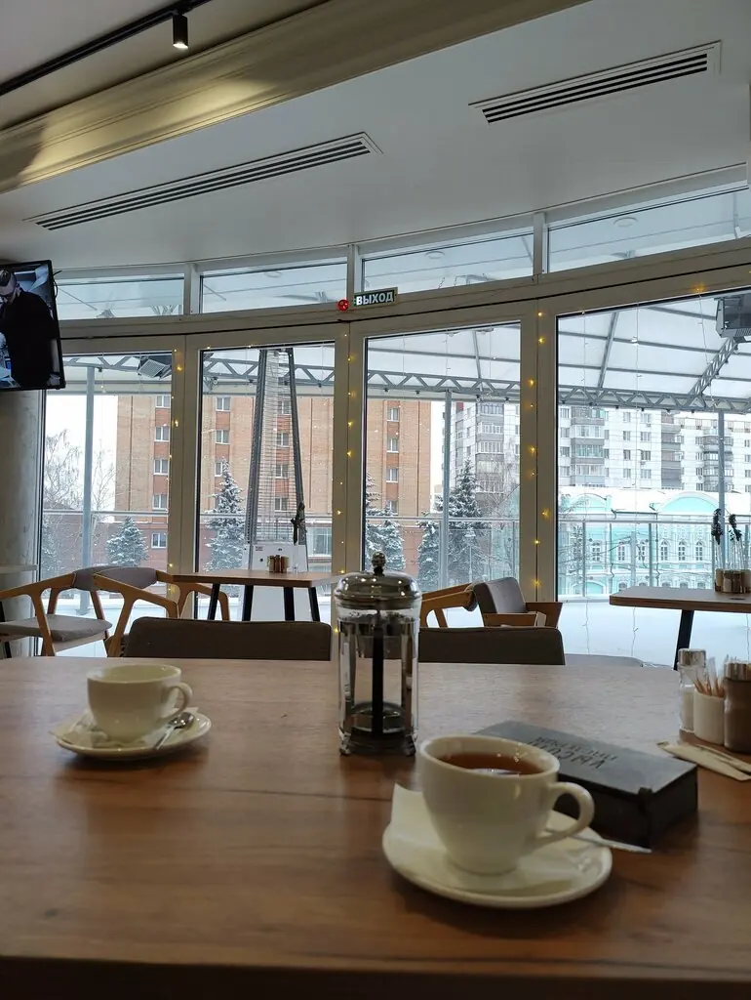
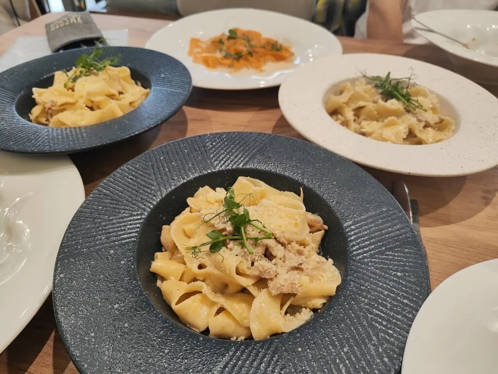
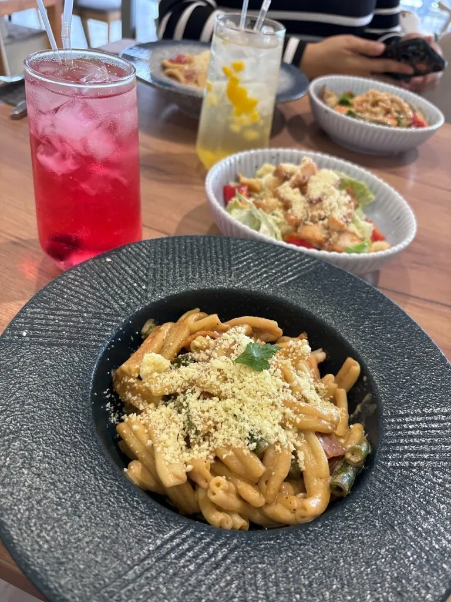
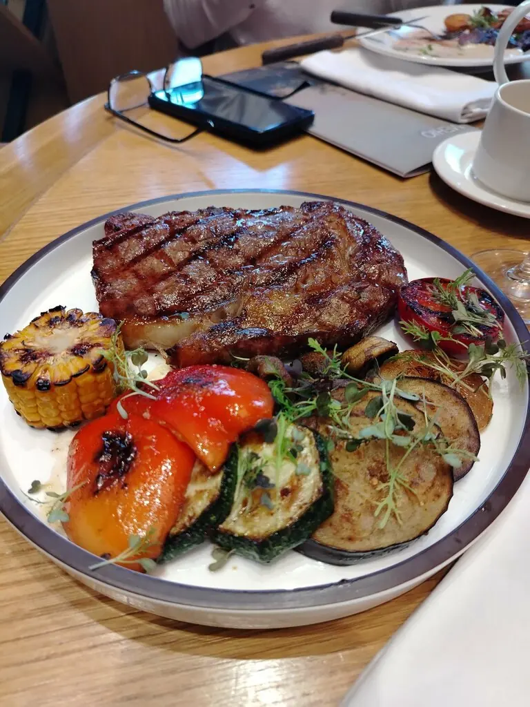
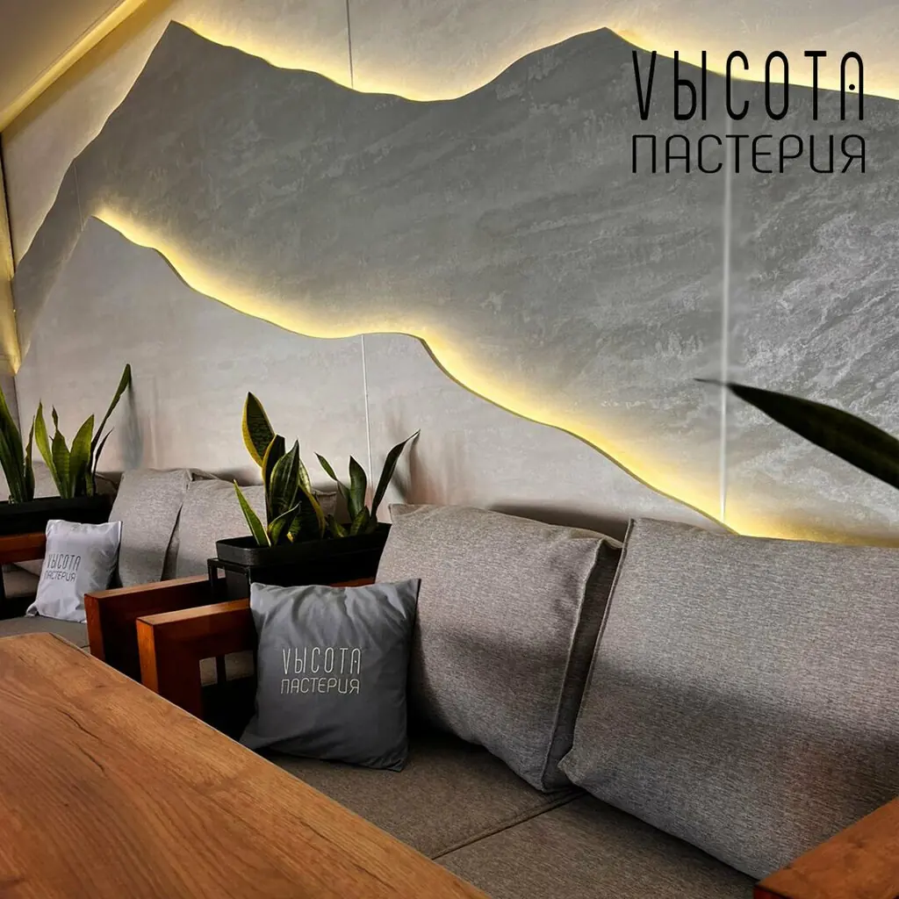

Vысота
Пастерия с панорамными окнами над улицей Ленина. Паста, вино и город внизу, а цены на земле.
4,9 · 902 оценки

Меню по этажам
03
Паста
Паста карбонара349 ₽
Паста болоньезе299 ₽
Паста BBQ с курицей и грибами299 ₽
Равиоли с креветками385 ₽

02
Салаты
С морепродуктами369 ₽
С красной рыбой и её икрой349 ₽
Со свининой329 ₽

01
К столу
Стейки и овощи с гриля, суп на томатах, коктейли и вино. Полное меню с ценами добавим из вашего прайса.

Часть меню с Яндекс Карт, цены уточняйте у официанта.
Вид включён
Светлый зал, длинные столы для компаний и уютные диваны вдоль стены с подсветкой. На 120 мест, и лучшие у окна.

Отзывы снизу
Вкусная итальянская кухня, приятные ценники. Интерьеру особый респект!Wowing Journey
Вкусно и красиво, быстро подают блюда, хороший выбор напитков.А И
Всё очень вкусно. Красивый и стильный интерьер.Анастасия Пащенко